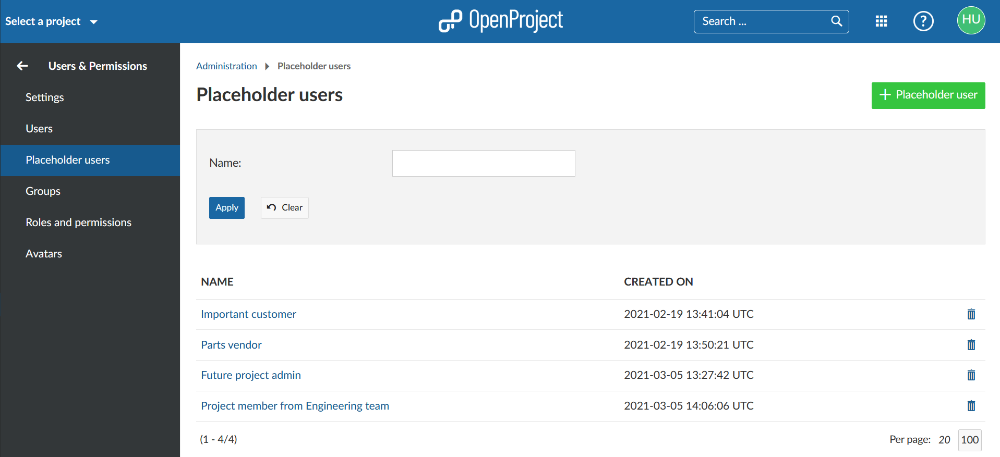
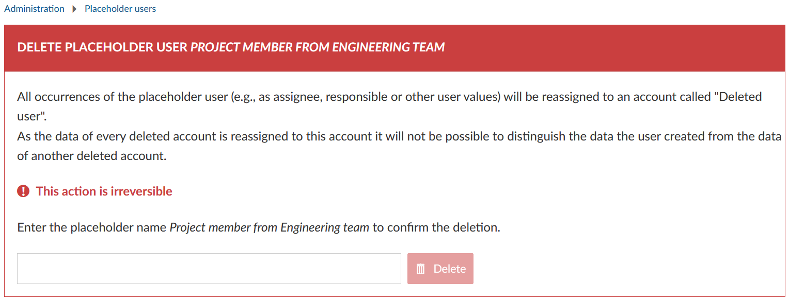
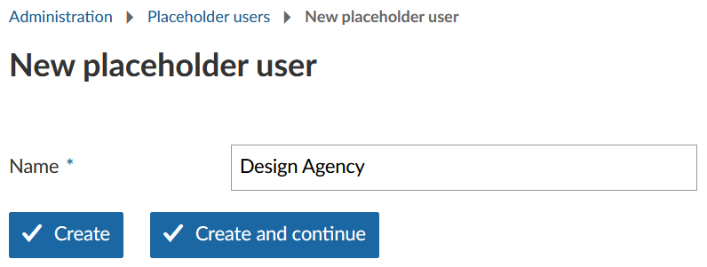
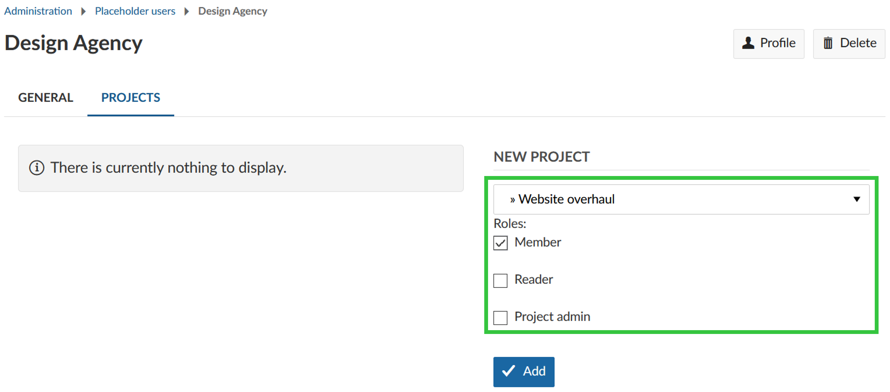
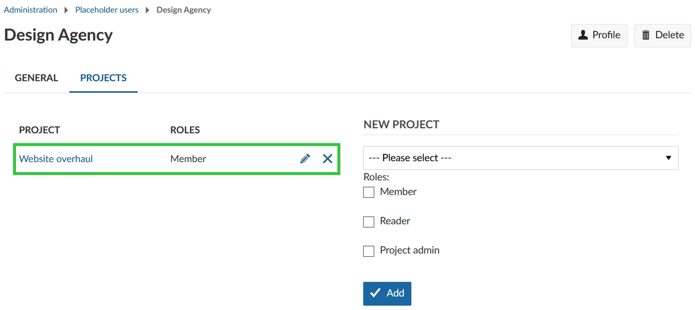
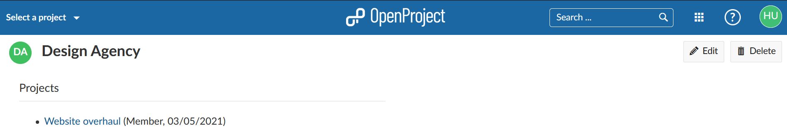

In OpenProject Enterprise on-premises and OpenProject Enterprise cloud you can add placeholder users to your instance. They can be created without an email address and do not need license seats.
Placeholder users can be used to plan a project with or for users who haven’t been added to that project yet. This way you can set up projects before staffing them. Another use case would be to include customers, vendors or partners in your planning without them knowing it.
Placeholder users can be managed by system admins and by users with the role “Create, edit and delete placeholder users”.
| Topic | Content |
|---|---|
| Placeholder user list | Manage placeholder users in OpenProject. |
| Create placeholder users | Add new placeholder users. |
| Manage placeholder user settings | Change names and add placeholders users to projects. |
To manage placeholder users navigate to Administration -> Users & Permissions -> Placeholder users. The placeholder user list gives you an overview of all placeholder users with their names and creation dates. From here you can also add placeholder users, edit them and delete them.
The column headers can be clicked to toggle sort direction. Arrows indicate sort order, up for ascending (a-z/0-9) and down for descending (z-a/9-0).

The placeholder user list can be filtered by name.
At the top of the user list is a filter box. Enter a name, then click the blue Apply button to filter the list. Click the Clear button to reset the filter field and refresh the list. You can enter any parts of a placeholder user name; this can also contain a “%” wild card for zero or more characters.
To delete a placeholder user open the placeholder user list. Click on the trash can symbol on the right to choose the placeholder user that you want to remove.
You will then be asked to type in the placeholder user name to confirm the deletion.

To add a new placeholder, user click on + Placeholder user in the upper right corner of the placeholder user list. Enter a name and click on Create to save or on Create and continue to save and create another placeholder user.

It is not possible to create two placeholder users with the exact same name.
You can change a placeholder user’s name and add it to a project if you click on its name in the placeholder user list.
On the General tab you can change the placeholder user’s name.
In order to be assigned to work packages and participate in a project, a placeholder user has to be a member of a project and needs to be added with a certain role to this project. On the Projects tab, select a project from the drop-down list, choose the role(s) for the placeholder user in this project and click the blue Add button.

To change a placeholder user’s role in a project or to remove it from the project use the edit button (pen) or delete button (X), respectively. If you edit the placeholder user’s role(s) don’t forget to use the Change button to save your changes.

Note: You can also use a project’s member list to manage a placeholder user’s participation in a project.
Placeholder users cannot be added to groups and cannot be assigned global roles. The avatar currently looks like that of users without a profile picture. In the future, additional changes and features for placeholder users will be implemented.
Similar to users, placeholder users have a profile page which shows their name and project memberships.
The projects are only visible for users who are allowed to see the project (e.g. user has permission to see this placeholder user in a common project or has a sufficient global role (e.g. system administrator)).

The profile page can be accessed via the placeholder user settings and via the overview page of projects the placeholder user is a member of.